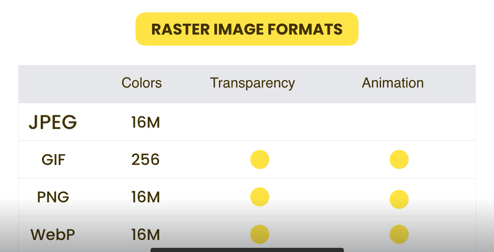

In computers we have two types of images
Made up of pixels. Raster images often come from cameras and scanners but they can also be produced in software. Any file with the extension of JPG, PNG, GIF is a raster image. We use these images for displaying photos. More pixels => More large files
Are defined by a set of mathematical vectors like lines and curves. Vector images are exported from drawing tools like Adobe Illustrator. Files with the SVG extension represent vector graphics.